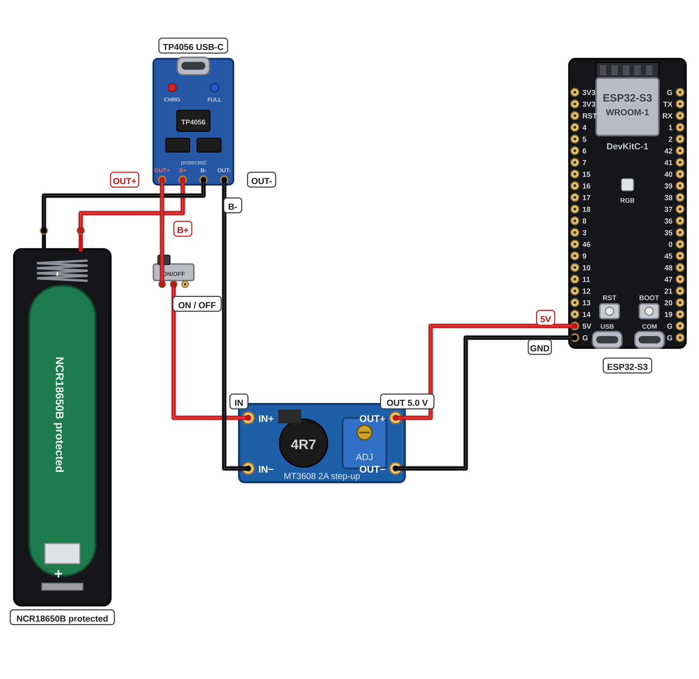

מלחימים על לוח מחוררים את שרשרת הכוח של העכבר: מחזיק הסוללה, מטען ה-TP4056, המתג ומגביר המתח MT3608.
הידיים על המלחם הן שלכם. המורה יושב לידכם מהרגע שהמלחם נדלק ועד שהוא מכובה ולא יוצא מהעמדה באמצע.
המלחם גר על המעמד שלו — כשהוא לא ביד, הוא על המעמד. אף פעם לא על השולחן.
מנקים את הקצה על הספוג הלח — אף פעם לא באצבעות.
לא נוגעים בקצה המתכת — הוא חם מאוד גם כמה דקות אחרי הכיבוי ותמיד מסתכלים היכן מניחים את המלחם.
נגעתם בטעות במשהו חם? שוטפים מיד במים קרים מהברז וקוראים למורה.
אלה אותם שלושה כללים מפרויקטים 4 ו-8. אתם כבר יודעים אותם — לכן אתם אומרים אותם, לא המורה.

אומרים בקול את שלושת הכללים שבמסגרת האדומה — והמלחם נדלק רק כשהמורה יושב לידכם.
הספוג רטוב, המעמד במקום והלוח מונח ישר לפניכם.
מלחימים בסדר הזה ובודקים כל חיבור מיד כשהוא מוכן:
בדיקה אחרי כל חיבור: משיכה עדינה ומבט מקרוב — הלחמה טובה מבריקה ולא זזה.
מלבישים שרוול מתכווץ על כל חיבור ומחממים בעדינות עד שהשרוול נצמד — חיבור אחרי חיבור, בלי לדלג.
שרוול שהתכווץ יפה נראה צמוד וחלק ומכסה את כל המתכת החשופה.
המורה מודד במולטימטר את זנב היציאה: בדיוק 5.0V — לפני שהזנב נוגע בלוח.
ה-MT3608 מגיע מכוון מראש ל-5.0V ובבורג הקטן שעליו לא נוגעים. את הכניסה מזין ספק שולחני של המורה — סוללה עדיין אין.
עדיין לא מכניסים סוללה למחזיק. המחזיק נשאר ריק עד שלב 10 — יום הסוללה, יחד עם המורה.
לוח כוח בלי סוללה הוא לוח בטוח. הסוללה נכנסת רק אחרי שהמורה בדק את הכיוון שלה.
לוח כוח אחד מסודר: המחזיק, המטען, המתג והמגביר יושבים על לוח מחוררים אחד. כל ההלחמות מבריקות וכל חיבור עטוף בשרוול. בזנב היציאה המורה מדד בדיוק 5.0V.
המחזיק עדיין ריק — הסוללה נכנסת בפעם הראשונה רק בכרטיסייה הבאה.
בפרויקט הזה שני דברים דורשים כבוד — המלחם והסוללה. מלחימים רק כשהמורה ליד ולא נוגעים בקצה המתכת של המלחם — והסוללה נכנסת למחזיק רק אחרי שהמורה בדק את הכיוון שלה. סוללה חמה, נפוחה או פגועה עוברת למורה מיד. כל הכללים בכרטיסיית R1.